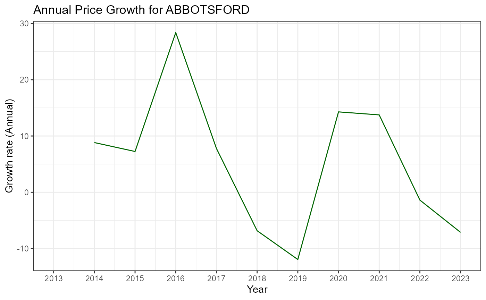

property-vignette.Rmd
library(MelbournePrices)
data("property_data", package = "MelbournePrices")Melbourne’s housing market has experienced significant shifts over the past decade. Once stable suburbs are now booming, and previously overlooked areas have become hotspots for investment. The dataset in this package allows us to dive deeply into these changes, revealing which suburbs have demonstrated robust growth, fluctuating volatility, and promising trends.
This vignette offers an analysis guide using data from 2013 to 2023, sourced from the Victoria State Government website. Through this analysis, we’ll identify suburbs with high investment potential and those with notable volatility, providing insights into the dynamics that drive Melbourne’s property market.
At some point, nearly everyone living in Melbourne has found themselves caught in the search for a place to buy, navigating the complexities of the city’s housing market. But can you imagine what property prices looked like a decade ago? With Melbourne’s real estate landscape evolving so dramatically, many are left wondering: which suburbs offer the best opportunities for investment, lifestyle, and long-term growth?
Dataset Description The dataset provides several key metrics on property prices and growth in Melbourne. Here’s a breakdown of the variables:
The data for this analysis was sourced from the Victoria State Government website , covering the period from 2013 to 2023 @tbl-data-dictionary.
The Valuer-General Victoria (VGV) releases comprehensive data which is compiled using information lodged every time a property sale is completed. It focuses on median house prices across various suburbs in Melbourne. The key metrics include annual median prices and percentage changes for each suburb.
library(knitr)
library(kableExtra)
data_desc <- data.frame(
Variable_Name = c("Locality", "Prelim", "22-23", "13-23", "PA", "year", "median_price"),
Description = c(
"The name of the suburb or locality in Melbourne.",
"Preliminary house price estimate for the latest year.",
"Percentage change in median house price from 2022 to 2023.",
"Percentage growth in house prices from 2013 to 2023.",
"Compound annual growth rate (CAGR) or price appreciation (PA) percentage.",
"The year associated with the median price.",
"The median house price in AUD for the specified locality and year."
)
)
# Print the data dictionary table
kable(data_desc, caption = "Variables in the dataset") %>%
kable_styling()| Variable_Name | Description |
|---|---|
| Locality | The name of the suburb or locality in Melbourne. |
| Prelim | Preliminary house price estimate for the latest year. |
| 22-23 | Percentage change in median house price from 2022 to 2023. |
| 13-23 | Percentage growth in house prices from 2013 to 2023. |
| PA | Compound annual growth rate (CAGR) or price appreciation (PA) percentage. |
| year | The year associated with the median price. |
| median_price | The median house price in AUD for the specified locality and year. |
Locality: This variable helps us track property trends within specific suburbs, making it possible to identify high-growth areas.
Prelim: Preliminary data for the latest year gives early insights into price trends and can highlight shifts that may continue into future years.
22-23 and 13-23: These metrics provide percentage growth over one year (2022–2023) and over a decade (2013–2023), allowing us to understand both recent shifts and long-term trends.
PA (CAGR): Represents the annualized growth rate over ten years, smoothing out year-to-year volatility and reflecting the underlying trend.
Year and median_price: These columns form the basis of our time-series analysis, enabling us to examine price changes across years for each locality.
1. Annual Price Growth for a Locality
The annual_price_growth function is designed to help users track the year-over-year growth in median property prices for a specific suburb. This function is useful for examining trends within individual localities, helping users understand how property prices have evolved over time in response to factors such as demand, local development, and changes in infrastructure.
By calculating the year-over-year percentage change in median prices, this function reveals periods of growth, stagnation, or decline within a specific suburb. It is particularly valuable for investors, real estate professionals, and policymakers who want to assess the stability and growth potential of specific areas in Melbourne.
annual_growth <- annual_price_growth(property_data, "ABBOTSFORD")
#> [1] "property_data type:"
#> [1] "tbl_df" "tbl" "data.frame"
#> [1] "property_data columns:"
#> [1] "Locality" "Prelim" "22-23" "13-23" "PA"
#> [6] "year" "median_price"
#> [1] "Subset after filtering by locality:"
#> Locality Prelim 22-23 13-23 PA year median_price
#> 1 ABBOTSFORD 1027500 -7 58 4.7 2013 792500
#> 2 ABBOTSFORD 1027500 -7 58 4.7 2014 862500
#> 3 ABBOTSFORD 1027500 -7 58 4.7 2015 925000
#> 4 ABBOTSFORD 1027500 -7 58 4.7 2016 1187500
#> 5 ABBOTSFORD 1027500 -7 58 4.7 2017 1280000
#> 6 ABBOTSFORD 1027500 -7 58 4.7 2018 1192500
head(annual_growth)
#> year median_price annual_growth_rate
#> 1 2013 792500 NA
#> 2 2014 862500 8.832808
#> 3 2015 925000 7.246377
#> 4 2016 1187500 28.378378
#> 5 2017 1280000 7.789474
#> 6 2018 1192500 -6.835938We can choose any locality/suburb for which we want to see the graph over the years and get the output for the same using this -
# Ploting annual growth for ABBOTSFORD
library(ggplot2)
annual_growth <- annual_price_growth(property_data, "ABBOTSFORD")
#> [1] "property_data type:"
#> [1] "tbl_df" "tbl" "data.frame"
#> [1] "property_data columns:"
#> [1] "Locality" "Prelim" "22-23" "13-23" "PA"
#> [6] "year" "median_price"
#> [1] "Subset after filtering by locality:"
#> # A tibble: 6 × 7
#> Locality Prelim `22-23` `13-23` PA year median_price
#> <chr> <dbl> <dbl> <dbl> <dbl> <int> <dbl>
#> 1 ABBOTSFORD 1027500 -7 58 4.7 2013 792500
#> 2 ABBOTSFORD 1027500 -7 58 4.7 2014 862500
#> 3 ABBOTSFORD 1027500 -7 58 4.7 2015 925000
#> 4 ABBOTSFORD 1027500 -7 58 4.7 2016 1187500
#> 5 ABBOTSFORD 1027500 -7 58 4.7 2017 1280000
#> 6 ABBOTSFORD 1027500 -7 58 4.7 2018 1192500
ggplot(annual_growth, aes(x = year, y = annual_growth_rate)) +
geom_line(color = "darkgreen") +
scale_x_continuous(breaks = seq(min(annual_growth$year), max(annual_growth$year), by = 1)) +
theme_bw() +
labs(title = "Annual Price Growth for ABBOTSFORD", x = "Year", y = "Growth rate (Annual)")
#> Warning: Removed 1 row containing missing values or values outside the scale range
#> (`geom_line()`).
The output displays the year, median_price, and annual_growth_rate columns for ABBOTSFORD. The annual_growth_rate column shows the percentage change in median property prices from one year to the next, giving insight into growth trends and potential volatility.
The Annual Price Growth chart and table present the year-over-year growth rate of median property prices for the selected locality, reflecting how values change annually.
Positive Growth Rate: Indicates an increase in property values, often signaling high demand due to factors like improved infrastructure, amenities, or buyer interest.
Negative Growth Rate: Suggests a decline in values, possibly due to reduced demand or economic shifts.
Stability vs. Fluctuation: Consistent growth reflects a stable market, while fluctuations may indicate volatility, often from speculative buying or changing demand.
This data helps investors identify high-growth areas or manage risks, and policymakers monitor market stability and guide development efforts.
2. Top-Performing Suburbs Based on Average Annual Growth
This function identifies the top n localities with the highest price volatility, which can be useful for risk analysis. By calculating the average annual growth rate in property prices for each suburb over a specified period, this function provides insights into which suburbs have demonstrated strong and consistent price appreciation. Such information can guide investment decisions, highlight emerging neighborhoods, and shed light on property market trends.
# Identify top 10 suburbs with the highest growth from 2013 to 2023
top_suburbs <- top_performing_suburbs(property_data, 2013, 2023, top_n = 10)
top_suburbs
#> Locality avg_annual_growth_rate
#> 83 BONNIE BROOK 26.08888
#> 143 CHARLEMONT 22.62022
#> 441 MAMBOURIN 21.86829
#> 542 OFFICER SOUTH 18.62138
#> 130 CARDIGAN 17.72802
#> 450 MARYSVILLE 13.47351
#> 632 SHOREHAM 12.41164
#> 97 BRIGHT 12.19240
#> 73 BIRREGURRA 12.03973
#> 653 ST ANDREWS BEACH 11.86636This command will output a list of the top 10 suburbs ranked by their average annual growth rates in median house prices. Each suburb’s growth rate represents the average year-over-year change in price, expressed as a percentage. For example, if a suburb shows an annual growth rate of 8%, it suggests that on average, property prices in that suburb have increased by 8% each year over the specified period.
The Top-Performing Suburbs table displays the suburbs with the highest average annual growth rates, highlighting areas with significant property value appreciation over the selected period.
High Average Growth Rate: Indicates a suburb with rapid price appreciation, often suggesting strong demand, emerging popularity, or new development potential.
Lower Average Growth Rate: Reflects more gradual growth, typical of stable or well-established neighborhoods with steady demand.
This data can help investors target high-growth areas and provide insights into neighborhoods with rising market interest, while lower volatility areas may appeal to risk-averse buyers or long-term investors.
3. Calculating Price Volatility for a Specific Locality
The price_volatility function assesses the variability of property prices within a specified locality. This function is valuable for understanding price stability, where high volatility may point to market speculation or changing demand, while low volatility often indicates a more stable market.
By calculating the standard deviation of median property prices over the available years, this function offers insights into price stability in a locality. Markets with higher volatility may present both greater risks and potential rewards, while stable markets are generally more attractive to conservative investors.
volatility <- price_volatility(property_data, "ABBOTSFORD")
volatility
#> $Locality
#> [1] "ABBOTSFORD"
#>
#> $Price_Volatility
#> [1] 196148.1The output will display the Locality and Price_Volatility, where Price_Volatility represents the standard deviation of median property prices for ABBOTSFORD.
High Volatility: A high Price_Volatility suggests significant yearly price fluctuations, often due to changing demand, speculative investments, or shifts in neighborhood appeal.
Low Volatility: Low volatility indicates stable prices, which can be attractive to long-term investors seeking consistent returns, often reflecting steady demand and established infrastructure.
For example, high volatility in ABBOTSFORD may signal substantial price swings due to speculative interest or new developments, while low volatility would imply more predictable returns.
4. Summarizing Market Trends by Year
The market_trends_by_year function provides a yearly summary of key property market metrics, such as the average median price, average growth rate, and the number of unique localities. This function helps users understand general trends over time, making it valuable for high-level analysis of property price patterns and market coverage in Melbourne.
annual_trends <- market_trends_by_year(property_data)
head(annual_trends)
#> year avg_median_price avg_growth_rate locality_count
#> 1 2013 477691.0 -0.1655769 787
#> 2 2014 512858.8 -0.1644211 787
#> 3 2015 571694.2 -0.2083496 787
#> 4 2016 625686.9 -0.2104521 787
#> 5 2017 704482.1 -0.1987476 787
#> 6 2018 716641.4 -0.2018557 787The output will show yearly data for avg_median_price, avg_growth_rate, and locality_count. This allows users to observe the market’s general growth, stability, and data coverage over the years.
Average Median Price (avg_median_price): A steady increase signals strong demand, while dips may indicate economic shifts.
Average Growth Rate (avg_growth_rate): Positive growth suggests a robust market; fluctuations may reflect changing conditions.
Locality Count (locality_count): An increasing count suggests market expansion or better data coverage.
The market_trends_by_year function provides a high-level view of Melbourne’s property market, aiding investors, analysts, and policymakers in understanding long-term trends.
This vignette demonstrates how to use the package’s functions to analyze Melbourne’s property market. Whether examining year-over-year price changes, identifying top-performing suburbs, or evaluating market stability, these tools offer valuable insights for investors, analysts, and other stakeholders seeking a deeper understanding of Melbourne’s evolving property landscape.